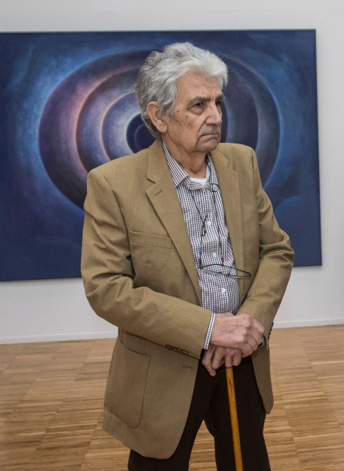

Antonio González Herranz
2015 | Exposición Antológica Sala de Exposiciones Villanueva de la Cañada (Madrid).
2006 | Exposición de Pintura Ateneo de Madrid.
2004 | Exposición Antológica Expo Arte (Madrid).
2001 | Exposición de la “Serie 90” en el edificio Caja Sur (Córdoba).
2000 | Exposición de Pintura y Escultura Galería Margarita Summer (Madrid).
2000 | Exposición de Pintura y Escultura Galería Juan Gris (Madrid).
1999 | Exposición de las obras “Serie 80” (Jaén).
1973 | Exposición de Esculturas en Galería Chelsea (Madrid).
1970 | Exposición de Pintura en la Sala Libros en Zaragoza.
1969 | Exposición colectiva de Escultura cuya obra fue adquirida por la Galería Christie´s de New York.
1969 | Galería Skira (Madrid). Exposición Individual de Pintura.